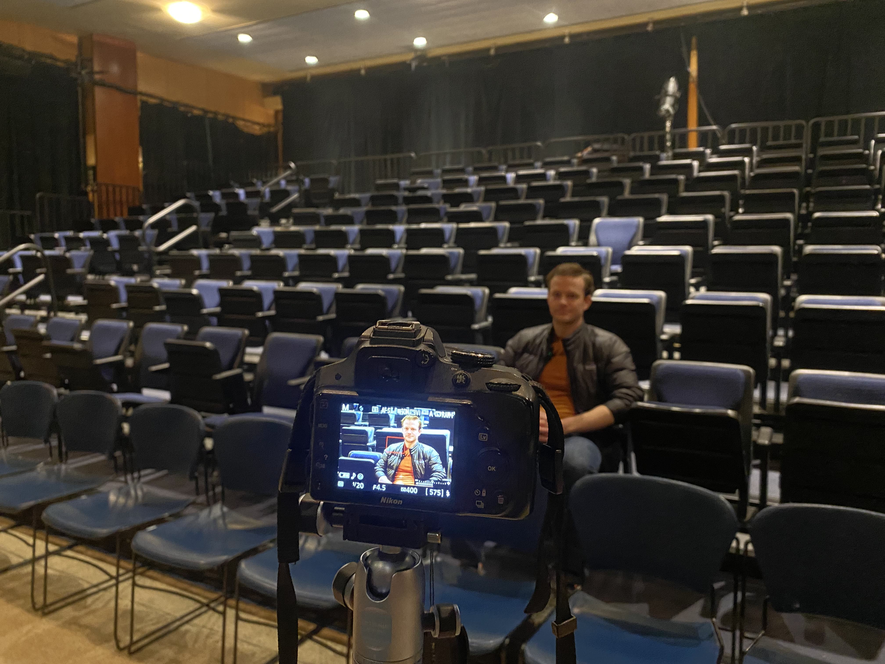
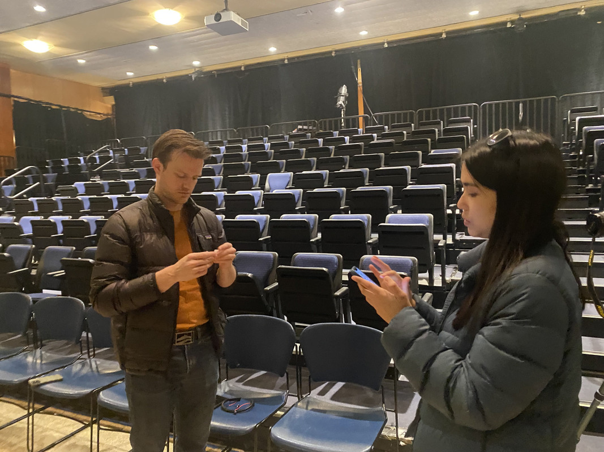

- 2/11 - gathered preliminary research from news articles and contact info for potential interview subjects; worked on project proposal for presentation
- 2/19 - worked on storyboard
- 3/7 - selected items for timelime based on research from online journals, ebooks and SAG-AFTRA site
- 3/9 - wrote interview questions; continued research and data entry for timeline
- 3/15 - gathered additional online research items for timeline; worked on timeline data entry and multimedia
- 3/20 - began reaching out to interview subjects; continued entering data and multimedia to timeline
- 3/25 - added timeline to website; worked on coding in link citations and styling italics in timeline spreadsheet
- 3/26-29 - worked on notes for presentation; reached out to additional interview subjects; added diversity contrast images to juxtapose; Two interviews are scheduled, timeline topics and media have been finalized. Trying to schedule at least two more interviews
- 3/31 - conducted additional research for timeline
- 4/1 - Found two books to check out at NYPL Performing Arts in Lincoln Center. Will pick up on April 5
- 4/2 - Researched UGC on SAG-AFTRA on Youtube and social media (TikTok & Instagram); emailed William Gazecki about Behind the Masks documentary; posted casting call on FB and Reddit; scheduling interview time with Sean Mana
- 4/7-13- one interview conducted, several others scheduled, B-roll, stock footage compiled,
- 4/18- read book on early SAG formation, and information is added to the timeline, finalized interview date with Amaya Braganza
- 4/19- Interview with Joseph conducted, B-roll collected, footage uploaded, book source on AFRA/AFTRA read and information added to the timeline
- 4/17 interviewed Sean Mana and uploaded footage plus b-roll to Drive
- 4/20-23- Interview with Amaya Braganza completed, b-roll collected, footage uploaded, Multiple choice quiz/ Javascript assignment started, questions drafted; watched Gazecki documentary for additional source material; began edits on Wright's video
- 4/24-4/25- editing Amayas footage and putting into eko, exporting and arranging into the website
- 4/26- more updates to the timeline, citations, new research, media images and videos, more detail added
- 4/29 - 5/1- added link colors to timeline; editing Joseph's footage and putting into eko, major style and layout changes made to the website, updating progress report
- 5/2-3-Titles changed using fontspace pngs, addition of design elements and cohesion of the site, adding video and photo elements where necessary, adding informational statements to assist with user experience; looked through clippings at NYPL Performing Arts for additional source material to complete timeline; figuring out coding for centering elements on Casting page; edited trailer subtitles on YouTube
- 5/5- New Juxtapose created with personal images. Captions of juxtapose were re-worked and embellished in order to provide viewer with more information and create a smoother connection between the central ideas of our project and the two juxtapose examples.


 